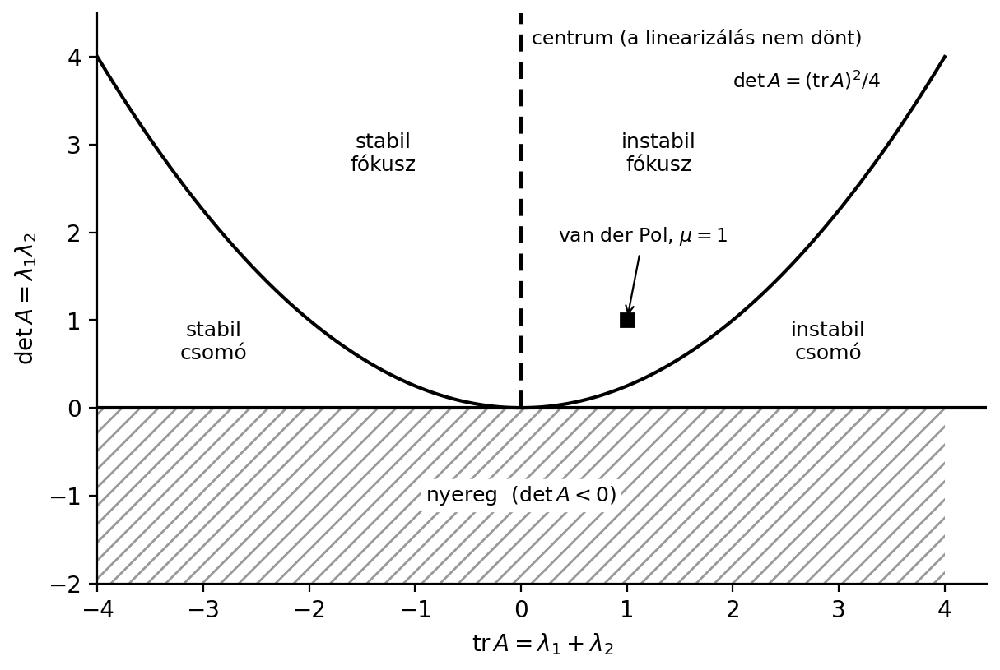
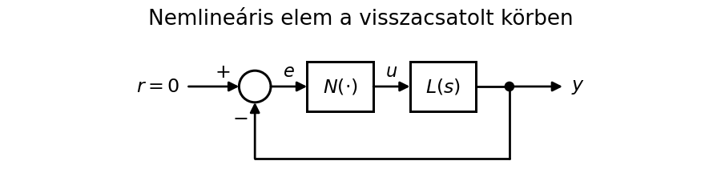
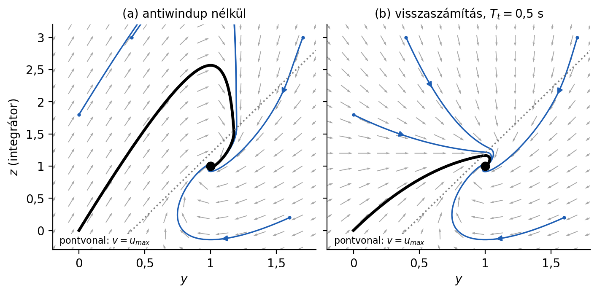

Eddig szinte minden folyamatot lineárisnak tekintettünk, vagy egy
munkapont körül linearizáltunk (Egyensúlyi pont és
linearizálás). Ez a módszer addig működik, amíg az állapot a
munkapont közelében marad. Három jelenség viszont egyetlen lineáris
modellből sem olvasható ki:
az ingának két teljesen különböző nyugalmi helyzete
van (lent és fent), és a kettő között egy határ húzódik: az egyik
oldalról indítva az inga visszaleng, a másikról átfordul;
egy relés szabályozó (be–ki kapcsoló fűtés a
hőkamrában) nem áll be az alapjelre, hanem magától, tartósan leng
körülötte, és a lengés nagysága nem függ attól, honnan indult;
a telítő beavatkozó mellett az integrátor
„felhalmozódik”, és a válasz alakja attól függ, mekkora a lépés.
Mindháromhoz olyan eszköz kell, amely a rendszer egész viselkedését
látja, nem csak egy pont környezetét. Két állapotváltozónál ez az eszköz
a fázissík (angolul phase plane): a két állapotot
egymás függvényében ábrázoljuk. Az önfenntartó lengést pedig egy
közelítő frekvenciatartománybeli eszközzel, a leíró
függvénnyel (describing function) jósoljuk meg.
25.1.2 Szemlélet: a fázissík
Legyen a rendszer két állapotú és bemenet nélküli (autonóm):
A képlet azt mondja: az állapottér minden pontjában ismerjük az
állapot változásának irányát és sebességét. Ha ezt a vektort kis
nyílként berajzoljuk a pontokba, vektormezőt kapunk.
Egy trajektória (pálya) olyan görbe, amely mindenütt a
nyilakat követi; az idő nem szerepel a tengelyeken, csak a haladási
irány jelzi. Két trajektória nem metszheti egymást, mert egy pontból a
rendszer csak egyféleképpen mehet tovább.
Az inga példáján:
az alsó helyzettől mért szög,
a szögsebesség. Normalizált alakban (a
controlkit.nonlinear.Pendulum modellje,
1/s²,
1/s, bemenet nélkül):
Mielőtt megnézed az ábrát, tippeld meg: ha az ingát alulról nagy
kezdősebességgel meglököd, milyen alakú lesz a pályája a
síkon?
Statikus változat (mint a PDF-ben)
Fázisportrék: (a) a csillapított inga alsó (teli kör) és
felső (rombusz) egyensúlyi pontjai, szaggatottal a csillapítatlan inga
szeparátrixa; (b) a van der Pol-oszcillátor, vastag vonallal a
határciklus
A nagy lökés után az inga először átfordul (a pálya jobbra vagy balra
vándorol,
folyamatosan nő), a csillapítás viszont elveszi az energiát, és végül
valamelyik alsó helyzet körüli spirálba fut. A (b) panelen egy egészen
más viselkedést látunk: a középső pontból kifelé, a távoli pontokból
befelé haladnak a pályák, és mindkettő ugyanahhoz a zárt görbéhez
tart.
25.1.3 Egyensúlyi pontok és a
Jacobi-mátrix
Definíció. Az
pont egyensúlyi pont (equilibrium), ha
:
innen indulva az állapot sosem mozdul el.
Az egyensúlyi pont környezetében a
eltérésre a linearizált modell
,
ahol az
Jacobi-mátrix elemei a
komponenseinek parciális deriváltjai az
pontban. A lineáris rendszer megoldása a sajátértékek exponenciálisaiból
áll (Megoldás: a mátrixexponenciális), ezért a
pont típusa a
sajátértékekből olvasható le:
sajátértékek
típus
pályák alakja
valós, mindkettő negatív
stabil csomó
befutnak, nem keringenek
valós, mindkettő pozitív
instabil csomó
kifutnak
valós, ellentétes előjelű
nyereg (saddle)
egy irányból be, egy másikon ki
komplex pár,
stabil fókusz
befelé spirál
komplex pár,
instabil fókusz
kifelé spirál
tisztán képzetes pár
centrum
zárt görbék (csak a lineáris modellben!)
-es
mátrixnál nem is kell sajátértéket számolni: a karakterisztikus polinom
,
ahol
a főátló összege és
.
Ha
,
a pont nyereg; ha
,
a nyom előjele dönti el a stabilitást, a
és a
viszonya pedig azt, hogy csomó vagy fókusz.

A
-es
lineáris rendszer típusa a nyom és a determináns síkján
Tétel (linearizálás, Hartman–Grobman). Ha a
Jacobi-mátrix egyik sajátértéke sem tisztán képzetes (az egyensúly
hiperbolikus), akkor az
kis környezetében a nemlineáris rendszer pályái folytonosan
átalakíthatók a linearizált rendszer pályáivá, a haladási irány
megtartásával [S-KHALIL].
Szavakkal: hiperbolikus pontnál a linearizálás megbízhatóan
megmondja, stabil-e a pont és keringenek-e körülötte a pályák. Ha
viszont valamelyik sajátérték valós része nulla, a magasabb rendű tagok
döntenek. Például az
,
rendszer linearizáltja centrum, a valódi rendszer pedig lassan befelé
spirál (ezt a Ljapunov-stabilitás módszerével
bizonyítjuk). A csomó és a fókusz megkülönböztetése simasági feltételek
nélkül nem mindig öröklődik, de a gyakorlati mérnöki modelleknél
igen.
25.1.3.1 Az inga: két egyensúly,
egy határ
Az inga egyensúlyi pontjai:
és
,
vagyis
A páros többszörösök a lenti helyzetek (stabil fókusz), a páratlanok a
fentiek (nyereg). A nyeregpontba befutó pályák alkotják a
szeparátrixot (separatrix): ez választja el azokat a
kezdőállapotokat, amelyekből az inga az egyik, illetve a másik lenti
helyzet felé indul. A csillapítatlan ingánál a szeparátrix zárt
képlettel adható meg az energiamegmaradásból:
Ennél nagyobb sebességgel az inga átfordul, kisebbel leng.
Csillapítással a határ elferdül, de a nyeregpontok megmaradnak: a felső
helyzet sosem stabil szabályozás nélkül (lásd a 2.
záróprojekt: fordított inga a kocsin).
25.1.4 Határciklus
Definíció. A határciklus (limit
cycle) olyan zárt trajektória, amelynek környezetében nincs másik zárt
trajektória. Ha a közeli pályák hozzá tartanak, a határciklus stabil; ha
eltávolodnak tőle, instabil.
Lineáris rendszerben ilyen nem létezhet: ha
periodikus megoldás, akkor
is az, tehát a zárt pályák egész családot alkotnak, és a lengés
nagyságát a kezdőállapot szabja meg. A határciklus amplitúdója ezzel
szemben a rendszer sajátja.
A klasszikus példa a van der Pol-oszcillátor:
A
tag „állapotfüggő csillapítás”: ha
,
negatív (energiát pumpál a rendszerbe), ha
,
pozitív (energiát vesz el). A pálya ott záródik, ahol egy periódus alatt
a nyert és az elvesztett energia kiegyenlíti egymást. A
esetben a szimuláció
amplitúdójára
-et,
a periódusra
s-ot ad. Kis
-nél
a görbe majdnem kör, a periódus közel
;
nagy
-nél
erősen torzul (relaxációs lengés). Az origó mindhárom esetben instabil,
ezért a lengés magától beindul.
25.1.5 A leíró függvény
A relés fűtés vagy a telítő erősítő körében is határciklus alakulhat
ki. A jelenség ott egy lineáris dinamikai rész és egy egyszerű,
memóriamentes (vagy hiszterézises) nemlinearitás negatív
visszacsatolásából áll:

Nemlineáris elem a visszacsatolt körben -
A lineáris rész
alulátereszti a nemlinearitás kimenetét.
Az ötlet: tegyük fel, hogy a kör leng, és a nemlinearitás bemenete
közelítőleg szinusz,
.
A kimenet,
,
periodikus, de nem szinuszos; Fourier-sorba fejthető, alapharmonikusa
.
Ha a lineáris rész alulátersztő (a magasabb
harmonikusokat erősen csillapítja), a visszacsatolt jelben gyakorlatilag
csak az alapharmonikus marad. Ez a szűrési
feltevés.
Definíció. A leíró függvény az alapharmonikus
komplex erősítése:
ahol
.
Szavakkal:
egy amplitúdófüggő „erősítés”, amely a nemlinearitást az
amplitúdójú szinuszokra a legjobban helyettesíti.
Ideális relé
():
a szinusszal együtt vált előjelet, ezért
A relé erősítése tehát kis amplitúdónál óriási, nagynál kicsi.
Telítés
(
meredekség,
bemeneti korlát): ha
,
a telítés nem lép működésbe,
;
ha
,
a
jelöléssel
Ez
-ról
indulva monoton csökken nullához. Hiszterézises relénél
komplex lesz, a negatív képzetes rész a késést (fázisveszteséget) fejezi
ki:
,
,
ahol
a hiszterézis félszélessége.
25.1.6 Harmonikus egyensúly és a
relés kísérlet
A körben
és
,
ahol
alapharmonikusa
.
Egy önfenntartó lengéshez a kör egyszeri bejárása után ugyanazt a jelet
kell visszakapnunk:
Ez a harmonikus egyensúly (harmonic balance).
Grafikusan: a lineáris rész Nyquist-görbéjét és a
görbét
(
a paramétere) egy ábrára rajzoljuk; a metszéspont megadja a lengés
frekvenciáját (a Nyquist-görbéről) és
amplitúdóját (a
görbéről). Lineáris erősítésnél
egyetlen pont – A Nyquist-kritérium című
alfejezet
pontja általánosítva görbévé nyúlik.
Stabil-e a megjósolt lengés? Képzeljük el, hogy az amplitúdó kissé
megnő. Ha ekkor a
pont a Nyquist-görbe által „körülzárt” (instabilitást jelentő)
tartományon kívülre kerül, a lengés lecsillapodik
vissza; ha kisebb amplitúdónál belül van, a lengés felnő. Ekkor a
határciklus stabil. Ez a szemléletes (Loeb-) feltétel stabil,
alulátersztő
mellett érvényes.
Statikus változat (mint a PDF-ben)
(a) A relés kör harmonikus egyensúlya; (b) a szimulált
kimenet a jósolt amplitúdóval (pontvonal); (c) a hőkamra relés lengése
és alapharmonikusa
Ideális relénél
a negatív valós tengely. A metszés ott van, ahol
,
azaz
,
és
.
Átrendezve:
Ez a relés önhangolás igazolása. A Ziegler–Nichols-módszerek és a relés önhangolás
ezt a képletet használta: a relés lengés amplitúdójából a kritikus
erősítés, periódusából a kritikus periódus becsülhető, anélkül hogy a
kört a stabilitás határára kellene hajtani.
A hőkamránál
(,
relé
%) viszont a leíró függvény
K-t jósol, a pontos érték
K (a periódus jó:
s a
s helyett). Az ok az (c) panelen látszik: ez a folyamat gyengén szűr, a
kimenet majdnem háromszögjel. Egy
csúcsértékű háromszög alapharmonikusa
,
és a
K
()
valóban közel van a jóslathoz. A leíró függvény tehát az alapharmonikust
jósolja jól, nem a csúcsot. Emiatt a relés kísérletből számolt
%/K lényegesen kisebb a pontos
%/K-nél.
25.1.7 Telítés és windup a
fázissíkon
Az Integrátortelítés és antiwindup jelensége
kétállapotú rendszeren a fázissíkon is követhető. Legyen a folyamat
,
a szabályozó PI
(,
),
a beavatkozó telítése
,
az alapjel
.
Az állapot
,
ahol
az integráló tag kimenete. A sík három tartományra oszlik aszerint, hogy
a szabályozó kért jele
a korlátok között van-e. Telítésben a rendszer másik vektormezőt követ:
,
miközben
tovább integrál.

A PI-szabályozott, telítő kör fázisportréja antiwindup
nélkül és visszaszámítással; vastag vonal az origóból indított
ugrásválasz
Antiwindup nélkül az integrátor
-ig
nő, a kimenet
-ig
lő túl, és a 2%-os beállás
s. Visszaszámítással
(
s) telítésben
,
ami itt éppen
:
az integrátor az
értékhez tart. A maximum
,
a beállás
s. Vedd észre, hogy az egyensúlyi pont
és annak típusa (stabil fókusz) ugyanaz: az antiwindup csak a telített
tartományok pályáit változtatja meg.
25.1.8 Kézi számpélda
1. Az inga egyensúlyi pontjai.
,
tehát
Lent
():
,
,
és
:
stabil fókusz. A sajátértékek
.
Fent
():
:
nyereg. A sajátértékek
,
azaz
és
.
Az instabil irány
,
a stabil
(egy sajátvektor
,
mert
).
Ellenőrzés: a szorzat
,
az összeg
.
2. Relés határciklus.
,
relé
.
Fázis:
,
ha
,
azaz
,
.
Amplitúdó:
.
Tehát
A szimuláció
-at
és
s-ot ad: 4%, illetve 2,5% eltérés. Itt a folyamat erősen szűr (a
harmadik harmonikust már nagyságrenddel jobban csillapítja), ezért jó a
becslés.
25.1.9 Kód
A controlkit.nonlinear megkeresi az egyensúlyi pontokat,
osztályoz, és határciklust mér:
import numpy as npfrom controlkit import nonlinear as nlinga = nl.Pendulum() # g/l = 9,81, c = 0,5for e in nl.find_equilibria(inga.rhs_down, (-4, 4), (-8, 8)): lam =", ".join(f"{l.real:.3f}{l.imag:+.3f}j"for l in e.eig)print(f"x* = ({e.x[0]:+.3f}, {e.x[1]:.0f}): {e.kind:14s} [{lam}]")for mu in (0.2, 1.0, 3.0): o = nl.limit_cycle(nl.van_der_pol(mu), t_end=120.0)print(f"van der Pol mu={mu}: amplitúdó {o.amplitude:.3f}, periódus {o.period:.3f} s")
x* = (-3.142, 0): nyereg [-3.392+0.000j, 2.892+0.000j]
x* = (+0.000, 0): stabil fókusz [-0.250-3.122j, -0.250+3.122j]
x* = (+3.142, 0): nyereg [-3.392+0.000j, 2.892+0.000j]
van der Pol mu=0.2: amplitúdó 2.000, periódus 6.299 s
van der Pol mu=1.0: amplitúdó 2.009, periódus 6.663 s
van der Pol mu=3.0: amplitúdó 2.023, periódus 8.859 s
A harmonikus egyensúlyt a harmonic_balance oldja meg
numerikusan; L tetszőleges hívható függvény, így a holtidő
is pontosan kezelhető:
from controlkit import modelsfrom controlkit.tf import TransferFunction as TFL = TF([1], [1, 3, 2, 0])(s,) = nl.harmonic_balance(L, nl.df_relay)t, y, u = nl.simulate_nonlinear_loop(L, nl.Relay(1.0), 40.0, 0.001, r=lambda t: 1.0if t <1else0.0)o = nl.measure_oscillation(t, y)print(f"DF: a = {s.amplitude:.4f}, T = {s.period:.3f} s, stabil: {s.stable}")print(f"sim: a = {o.amplitude:.4f}, T = {o.period:.3f} s")kamra = models.ThermalChamber()Lh =lambda s: kamra.tf_no_delay()(s) * np.exp(-kamra.theta * s)(h,) = nl.harmonic_balance(Lh, lambda a: nl.df_relay(a, 20.0), w_range=(1e-3, 0.15))th, yh, _ = nl.simulate_nonlinear_loop(kamra.tf_no_delay(), nl.Relay(20.0), 600.0, 0.02, theta=kamra.theta)oh = nl.measure_oscillation(th, yh)print(f"hőkamra DF: a = {h.amplitude:.3f} K, T = {h.period:.1f} s")print(f"hőkamra sim: a = {oh.amplitude:.3f} K, T = {oh.period:.1f} s")
DF: a = 0.2122, T = 4.443 s, stabil: True
sim: a = 0.2201, T = 4.552 s
hőkamra DF: a = 0.779 K, T = 77.0 s
hőkamra sim: a = 0.952 K, T = 76.4 s
A fázisportrét a
nl.plot_phase_portrait(ax, f, xlim, ylim, starts) rajzolja
egy matplotlib tengelyre, és visszaadja a megtalált egyensúlyi pontokat;
a későbbi fejezetek is ezt használják.
A fázisportrén válaszd az ingát, állítsd
-ra,
és kattints a szaggatott szeparátrix alá, majd fölé. Alatta zárt
görbéket látsz (lengés), fölötte hullámos vonalat (átfordulás). Állítsd
-re:
miért tűnnek el a zárt görbék?
Válaszd a van der Pol rendszert,
,
és indulj a
,
majd a
pontból. Az állapotsor mindkétszer kb.
amplitúdót és
s periódust ír. Állítsd
-ra:
mi történik az origóval, és mit mutat a visszafelé futó
(szaggatott-pontozott) pálya?
A lineáris rendszeren a nyom–determináns ábra mind a hat tartományát
látogasd meg. Mi történik, ha
és
?
A harmonikus egyensúly lapján telítésnél csökkentsd
-t
-ről
-re:
a metszéspont eltűnik és a lengés elhal. Mekkora
-nál
tűnik el? Hiszterézises relénél növeld
-t:
az amplitúdó nő, a frekvencia csökken.
25.1.11 Tipikus hibák
„A linearizált modell centrum, tehát a rendszer lengésben
marad.” Tünet: a szimuláció lassan lecsillapodik vagy felnő.
Ok: nem hiperbolikus egyensúlynál a linearizálás nem dönt. Javítás:
Ljapunov-függvény vagy a magasabb rendű tagok vizsgálata.
A határciklus összekeverése a stabilitás határán lévő
lineáris lengéssel. Tünet: azt várod, hogy más kezdőállapotból
más amplitúdójú lengés lesz. Ok: a határciklus amplitúdója a
nemlinearitásból következik. Javítás: indíts több kezdőpontból, és nézd,
ugyanoda futnak-e.
A leíró függvény csúcsértékként kezelése. Tünet:
relés kísérletnél a
becslés rendszeresen eltér. Ok:
az alapharmonikusra vonatkozik; gyengén szűrő (holtidős, elsőrendű)
folyamatnál a jel háromszögszerű. Javítás: kezeld a
-t
becslésként, vagy számold ki a mért jel alapharmonikusát.
A fázissík használata három vagy több állapotra.
Tünet: „metsző” pályák egy vetületben. Ok: a vetület elveszíti az
információt. Javítás: a fázissík pontos csak kétállapotú rendszerre,
vagy olyan redukált dinamikára, amelyről ez bizonyított.
„Nincs metszéspont, tehát stabil minden
kezdőállapotra.” A leíró függvény közelítés: a metszés hiánya
erős jelzés, de nem bizonyítás.
25.1.12 Önellenőrzés
Miért nem lehet lineáris, időinvariáns rendszernek (izolált)
határciklusa?
Mit mond a linearizálás, ha a Jacobi-mátrix sajátértékei tisztán
képzetesek?
Mit választ el egymástól az inga szeparátrixa?
Mi a leíró függvény, és melyik feltevés kell a használatához?
Hogyan látszik a windup a fázissíkon, és mit változtat rajta az
antiwindup?
25.1.13 Feladatok
(A) Osztályozd az
és az
mátrixú rendszer origóját a nyom és a determináns alapján, majd számold
ki a sajátértékeket.
(A) Számítsd ki a
,
telítés leíró függvényét
-nél.
(B) Az inga bemenetén állandó
nyomaték hat. Mely szögekben van egyensúly
-ben,
és milyen típusúak?
(B) Relés
()
szabályozás alatt a folyamat
.
Jósold meg a lengés amplitúdóját és periódusát, majd ellenőrizd
szimulációval. Mekkora a
?
(B) Az
folyamat bemenete
-nél
telít. Milyen
esetén jósol a leíró függvény határciklust, és
-nél
mekkora amplitúdóval?
(C, programozós) A relét lásd el
hiszterézissel
(,
).
Számold ki a jóslatot és a szimulált értékeket
esetén, és magyarázd meg a tendenciát a
görbével.
(C) A van der Pol-oszcillátorra legyen
.
Számítsd ki
-t,
és magyarázd meg belőle, miért nő a lengés az origó közelében és miért
csökken messze tőle.
25.1.14 Rövid összefoglaló
A fázissíkon a kétállapotú rendszer minden pályája egyszerre látszik.
Az egyensúlyi pontok típusát (csomó, nyereg, fókusz) hiperbolikus
esetben a Jacobi-mátrix sajátértékei adják; tisztán képzetes
sajátértéknél a linearizálás nem dönt. Az inga nyeregpontjain átmenő
szeparátrix a lengés és az átfordulás határa. A határciklus saját
amplitúdójú, izolált zárt pálya (van der Pol, relés kör). A leíró
függvény
a nemlinearitás alapharmonikus-erősítése; a
harmonikus egyensúly alulátersztő lineáris résznél jó közelítéssel
megadja a lengést, relénél
.
A fázisportré-rajzoló és a leíró függvény a
controlkit.nonlinear modulban van.
,
azaz
vagy
.
A Jacobi alsó sora
.
-nél
:
stabil fókusz,
.
-nél
:
nyereg,
és
.
Ugyanaz a nyomaték egy stabil és egy instabil egyensúlyt is tart.
,
ha
.
,
így
,
s,
.
A szimuláció
(,
lépésköz 1 ms):
,
s.
a
szakasz;
.
Metszés csak ha
,
azaz
(éppen a lineáris kör stabilitási határa).
-nél
,
az 2. feladat szerint
kissé nagyobb 2-nél:
,
.
A lengés stabil.
A
vízszintes egyenes
képzetes résszel; lejjebb tolódva a Nyquist-görbét kisebb frekvencián,
nagyobb
-nél
metszi. A jóslat (szimuláció) amplitúdója
:
();
:
();
:
().
A periódus
s
(),
s
(),
s
().
Kód:
nl.harmonic_balance(L, lambda a: nl.df_relay_hysteresis(a, 1, eps), a_range=(eps * 1.001, 100))
és nl.Relay(1.0, eps).
.
A
sávban
(a távolság nő), azon kívül
.
Kis pályák teljes egészében a sávban futnak, ezért nőnek; a nagyok
jórészt kívül, ezért zsugorodnak. A kettő között van a határciklus.
25.1.15.1 Válaszok az önellenőrző
kérdésekre
Ha
periodikus megoldás, akkor
is az: a zárt pályák sosem izoláltak.
Semmi biztosat: a nemlineáris tagok döntik el, hogy centrum, stabil
vagy instabil spirál.
A különböző hosszú távú viselkedésű kezdőállapotokat (lengés vagy
átfordulás, illetve melyik lenti helyzethez tart).
A nemlinearitás alapharmonikusának amplitúdófüggő komplex erősítése;
kell hozzá, hogy a lineáris rész a felharmonikusokat elnyomja.
Telítésben a pálya az integrátor irányába messzire fut, mielőtt
visszatér; az antiwindup a telített tartományokban visszahúzza
-t,
az egyensúlyt nem változtatja meg.